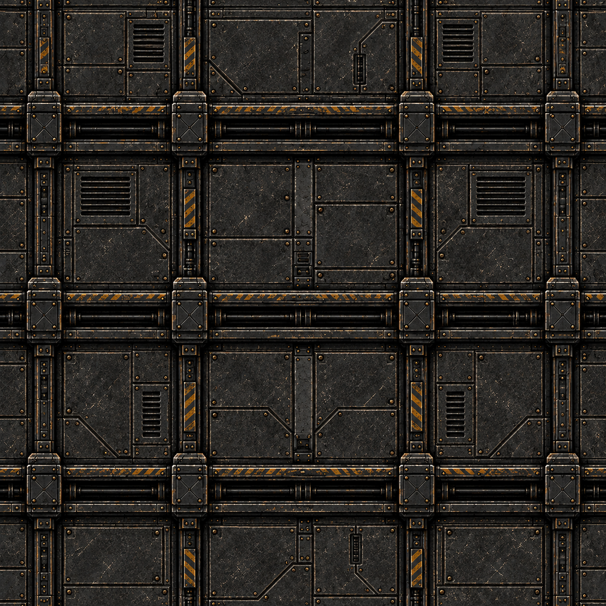
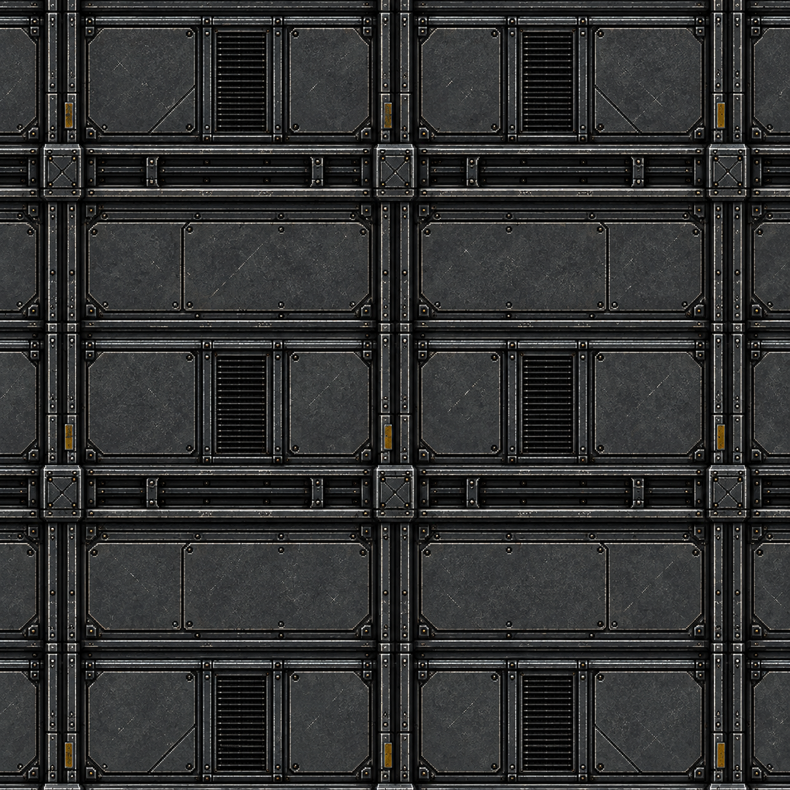
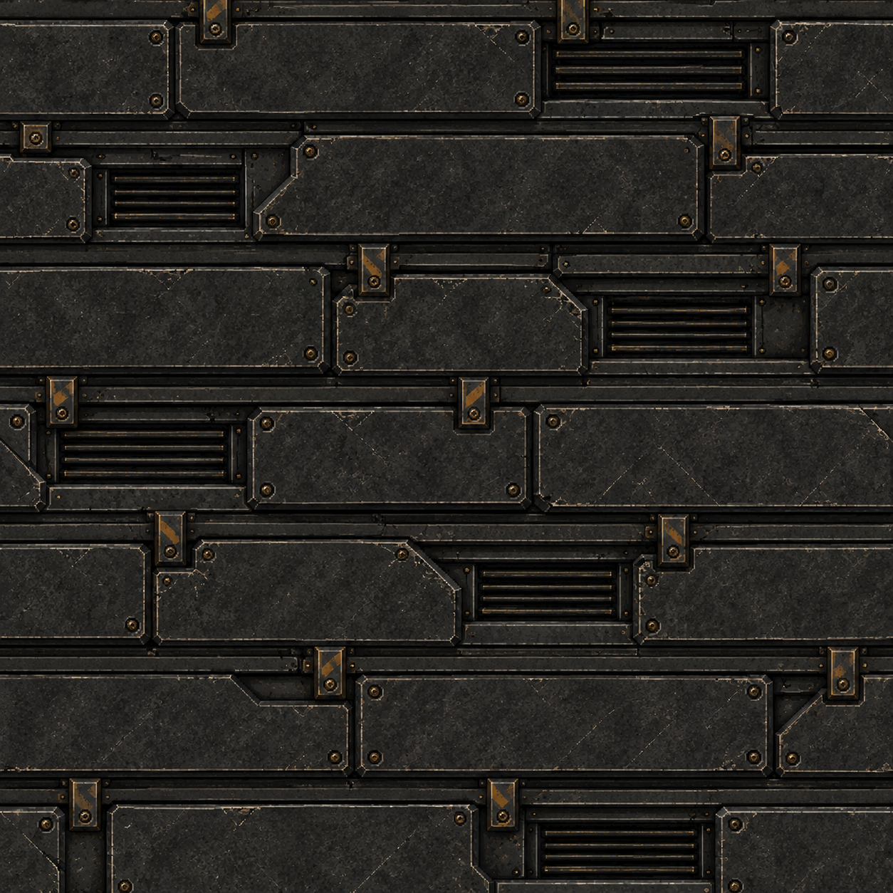

StarNet · Shell texturesSTARNET / MATERIAL STUDIES / 2026.09.15
Station shell textures
Three new hull materials. Select an image to open the full-resolution PNG. Repeated swatches below make pattern rhythm and edge alignment easy to inspect.
Artwork preview · Live station lighting has not been applied.
Bastion Armor

Repeating at 288px
Repeating at 96px
Titanium Ribs

Repeating at 288px
Repeating at 96px
Obsidian Thermal

Repeating at 288px
Repeating at 96px